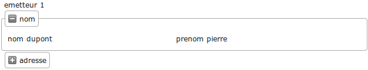

Modifier la base et regénérer¶
Le framework openMairie permet de modifier la base et prendre en compte ces modifications en regénérant les scripts sans mettre en péril la personnalisation que vous avez effectuée.
Nous vous proposons de rajouter un champ registre dans la table courrier et de rajouter l’adresse dans la table emetteur.
Rajouter un champ registre dans courrier¶
Il est proposé de rajouter un champ registre dans le courrier dont le but est de stocker le numéro de registre du courrier sous la forme annee_numero_d_ordre.
Nous allons d’abord créer un champ registre dans la table courrier de la manière suivante :
ALTER TABLE courrier ADD registre VARCHAR( 20 ) ;
Vous devez regénérer votre application courrier dans l’option du menu Administration -> Générateur -> Courrier et laisser cochées les options par défaut :
gen/obj/courrier.class.php
gen/sql/pgsql/courrier.inc.php
Validez l’opération.
Vous pouvez remarquer, si vous allez sur le formulaire d’ajout, qu’il y a un nouveau champ registre. Votre personnalisation n’est pas affectée.
Nous voulons que le numéro de registre se mette en ajout de manière automatique une fois le formulaire validé.
Il faut donc surcharger les méthodes suivantes dans obj/courrier.class.php :
// pour que registre ne soit pas modifiable
function setType(&$form,$maj) {
parent::setType($form,$maj);
$form->setType('registre', 'hiddenstatic');
}
// pour la mise à jour de la séquence avant l'ajout de l enregistrement
function triggerajouter($id,&$db,$val,$DEBUG) {
// prochain numero de registre
// fonction DB pear
$temp= $db->nextId("registre");
// fabrication du numero annee_no_d_ordre
$temp= date('Y')."-".$temp;
$this->valF['registre'] = $temp;
}
Si vous souhaitez que registre apparaisse dans l’affichage de la table, vous devez aussi modifier la variable champAffiche de sql/pgsql/courrier.inc de la manière suivante :
$champAffiche = array(
'courrier.courrier as "'._("courrier").'"',
'to_char(courrier.dateenvoi ,\'DD/MM/YYYY\') as "'._("dateenvoi").'"',
'concat(emetteur.nom,\' \',emetteur.prenom) as "'._("emetteur").'"',
'service.libelle as "'._("service").'"',
'registre'
);
Votre affichage de la table courrier est modifié.
Rajouter l’adresse dans emetteur¶
Il est proposé de rajouter l’adresse de l’emetteur à savoir : le libellé, le code postal et la ville.
La requête est la suivante :
ALTER TABLE emetteur ADD adresse VARCHAR( 40 ) ,
ADD cp VARCHAR( 5 ) ,
ADD ville VARCHAR( 40 ) ;
Vous devez regénérer votre application courrier en allant dans l’option du menu : administration -> generateur -> emetteur et laisser cochées les options par défaut :
gen/obj/emetteur.class.php
gen/sql/pgsql/emetteur.inc.php
Validez l’opération.
N’ayant pas modifié sql/pgsql/emetteur.inc, le framework fonctionne avec le code généré.
Améliorer la présentation du formulaire emetteur¶
Nous pouvons continuer à améliorer les présentations de nos formulaires en utilisant les méthodes setGroupe() et setRegroupe() dans le script obj/emetteur.class.php.
Il vous est proposé d’insérer dans votre script obj/emetteur.class.php le code suivant :
function setLayout(&$form, $maj) {
$form->setFieldset('nom','D',_('nom'),"collapsible");
$form->setFieldset('prenom','F');
$form->setFieldset('adresse','D',_('adresse'),"startClosed");
$form->setFieldset('ville','F');
}
Le fieldset nom est affiché par défaut, pas celui de l’adresse :
Vos formulaires sont maintenant au point.
Le paragraphe suivant vous indique les surcharges d’openCourrier et d’openCimetiere que vous pouvez intégrer dans votre exemple, maintenant que vous avez la méthode.
Les surcharges d’openCourrier¶
Vous pouvez utiliser openCourrier qui est téléchargeable au lien suivant :
http://www.adullact.net/frs/?group_id=297
Si les surcharges qui ont été faites dans notre exemple sont celles d’openCourrier, il y a d’autre surcharges dans le script courrier.class.php d’openCimetiere :
Les méthodes setLib, setGroupe et setRegroupe permettent une présentation en fieldset du courrier (utilisation des champs vide 1 à 5 voir sql/pgsql/courrier.form.inc).
Il y a d’autres objets métier qui ont des surcharges intéressantes, par exemple l’objet obj/dossier.class.php où vous avez un upload pour télécharger des fichiers.
Vous pouvez regarder également l’application openCourrier mais attention à la base de données qui est en MySQL :
openCourrier fonctionne avec des restrictions d’accès par service et les méthodes de login ont été modifiées dans obj/utils.class.php ainsi qu’utilisateur.class.php qui a dans openCourrier un champ service.
l’objet obj/tachenonsolde.class.php est un exemple de surcharge de tache.class.php qui affiche que les tâches non soldées
vous pouvez aussi regarder deux scripts de traitement :
- trt/num_registre.php qui remet à 0 le numéro de registre
- trt/archivage.php qui tranfere en archive les courriers avant une date
Vous avez également des détails sur les traitements dans le chapitre framework/util notament sur la mise à jour du registre.